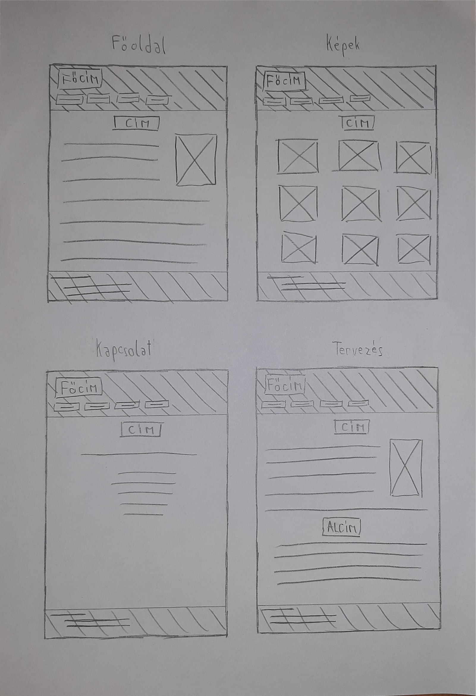

Tervezés
A weboldal 4 oldalból áll: a Főoldal, a Képek, a Kapcsolat és a Tervezés. A terv alapján látszik, hogy az oldal egy fejlécből, a főrészből és egy láblécből áll. A fejlécben a nev és a menüsor, a láblécben a fő elérhetőségeim gondoltam. Az oldal színeként a szürkét és annak árnyalatait választottam, mert egyrészt szeretem a szürke színt, másrészt nem ríkitó és árnyalatai jól elkülöníthetők egymástól. A képen az eredeti tervem látható, amiben a fejléc balra lett volna igazítva, valamint a fejléc és a lábléc lekerekített sarkok nélkül, teljes szélességben foglalt volna helyet az oldalon.
Bár ez nem fontos, én azért gondoltam ideírom. Mivel az összes példaként mutatott portfólió honlapon volt egy külön oldal teljes mértékben valami féle képeknek dedikálva, ezért úgy gondoltam én is csinálnék egy olyat. Voltak akik műveiket, voltak akik természetfotókat, voltak akik autókat raktak arra az oldalra, nekem viszont tankokhoz és vadászrepülőkhöz volt kedvem. Mint már modtam ez nem fontos információ, de azért ideírom.
Változtatások
Az oldal készítése közben azonban egyre az eredeti elrendezés áttervezése felé hajlottam. Miközben ötletek után kutattam, egy korábbi halgató által készített oldalnak nagyon megtetszett a lekerekített design-ja, ezért úgy gondoltam, hoyg az enyémben jó lenne megpróbálnom valami hasonlót. Így lett ilyen matricaszerű mind a fejléc, mind a lábléc. Ezeknek a lekerekített kinézete annyira megtetszett, hogy úgy döntöttem a gombokat is íly módon fogom csinálni, valamint bónuszként még a főrész köré is tettem egy lekerekített bordert. A fejléc balra igazítása továbbra sem tetszett (úgy gondoltam kicsit hülyén néz ki), ezért középre toltam azt (egyértelműen a gombokkal együtt, mert azok is a fejléc részei). Az adott oldal címét (pl.: Főoldal) balra igazítottam a szöveggel együtt, így tűnt eleinte normálisnak, de később meggondoltam magam és betoltam középre. Ezt a design átmásoltam a másik 3 oldalra is, hogy uniform legyen az egész, csak annyi változtatást csináltam, hogy a Kapcsolat oldal aljáról eltüntettem a láblécet, mert teljesen fölöslegesnek találtam fő elérhetőségeimet odaírna annak az oldalnak az aljára, amin nincsen más, csak az elérhetőségeim.
Nehézségek
A Főoldalt nézve 3 fő problémám volt. Az első az volt, hogy ha az ablakot széltében eléggé összenyomtam, a menüsor egy idő után az oldal jobb oldalán kiment a képből. Ezzel sokat bajlódtam, de végül úgy oldottam meg, hogy meghatároztam egy szélességet ami alatt a táblázat elemei már nem egymás mellett, hanem egymás alatt vannak.
A Főoldalon a második problémám a gombokkal volt. Azt akartam, hogy a gombon bárhova kattintva oldalt lehessen váltani. Először a td-re raktam rá a tulajdonságokat, de akkor csak a gombban lévő szövegre kattintva lehetett oldalt váltani. Ezt úgy küszöböltem ki, hogy nem a td-t hanem magát a linket formáztam gombbá. Még a menüsor gombjaival azt akartam csinálni, hogy ha egérrel elmegyek felettük, akkor a háttérszínük egy átmenettel megváltozik. Ezzel is sokat bajlódtam, de végül nagyjából sikerült, egyedüli problémám vele, hogy az oldal betöltésekor is átmenet történik a fejléc eredeti sötétszürke hátterszíne és a gombnak beállított világosszürke háttérszín között. Ezt azonban már nem tudom, hogyan lehetne megoldani, ezért bennehagytam. Bár ez lehet csak a böngészőm miatt látom így, de ezt kétlem.
A Főoldalon a harmadik és egyben utolsó problémám pedig az volt, hogy a képem, amit floattal a szöveg jobb oldalára tettem, az oldal elegendő kicsinyítése miatt kilóg a főrész köré rakott borderen kívülre, bele a láblécbe, sőt akár annál tovább is tudott nyúlni. Ezt úgy oldottam meg, hogy az egész főrészt gridnek állítottam be, hogy ha esetleg addig kicsinyítenénk a képet, hogy a kép túllógna a főrészen, akkor az megnő annyira, hogy a képet még egészében magában foglalja. Így nemcsak hogy nem lóg bele a kép a láblécbe, de még a főrész borderén sem megy túl.